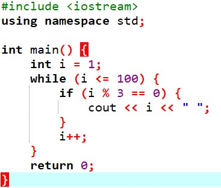
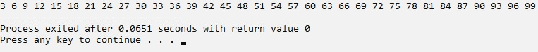

Il ciclo While è una iterazione che funziona partendo con una condizione di ingresso, chiamata test che può avere come risultato vero o falso:
con il risultato vero, si entra nel corpo del ciclo e si esegue l'operazione presente nel blocco delle istruzioni – al termine dell’operazione si torna indietro per ripetere il test;
con il risultato falso, si esce dall’altro ramo e si prosegue il programma con le istruzioni successive.
L'istruzione del ciclo While viene chiamata "controllo di testa" o "in testa" perché si esegue/ripete solo dopo l’esito Vero di un test iniziale.
Esempio di ciclo While in C++: stampa i numeri multipli di 3 da 1 a 100 - Codice
int main() {
int i = 1;
while(i <= 100) {
if(i % 3 == 0) {
cout << i << endl;
i++;
}
return 0;
}
Esempio di ciclo While in C++: stampa i numeri multipli di 3 da 1 a 100 - Codice di programmazione

Esempio di ciclo While in C++: stampa i numeri multipli di 3 da 1 a 100 - Immagine a video
